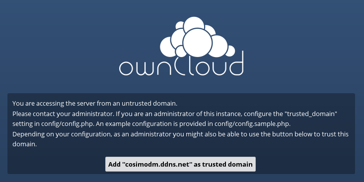

https://doc.owncloud.org/server/8.1/user_manual/files/access_webdav.html
https://doc.owncloud.org/server/8.1/admin_manual/configuration_server/performance_tuning.html
https://doc.owncloud.org/server/8.1/admin_manual/



<?php
$CONFIG = array (
'instanceid' => 'ocirkp0dspk9',
'passwordsalt' => 'cpTtxTmrEyFfL32pv1lZwfdpvzpI85',
'secret' => 'hUBxG6B4mjTzmUuB2TjHsAoJnIo21fHUullfKVsv6KN3uAlF',
'trusted_domains' =>
array (
0 => '192.168.1.7',
1 => '74.213.228.151',
),
'datadirectory' => '/var/www/owncloud/data',
'overwrite.cli.url' => 'http://192.168.1.7/owncloud',
'dbtype' => 'sqlite3',
'version' => '8.1.5.2',
'logtimezone' => 'UTC',
'installed' => true,
'trusted_domains' =>
array (
'cosimo.ddns.net',
'74.213.228.151',
'192.168.1.7',
),
);